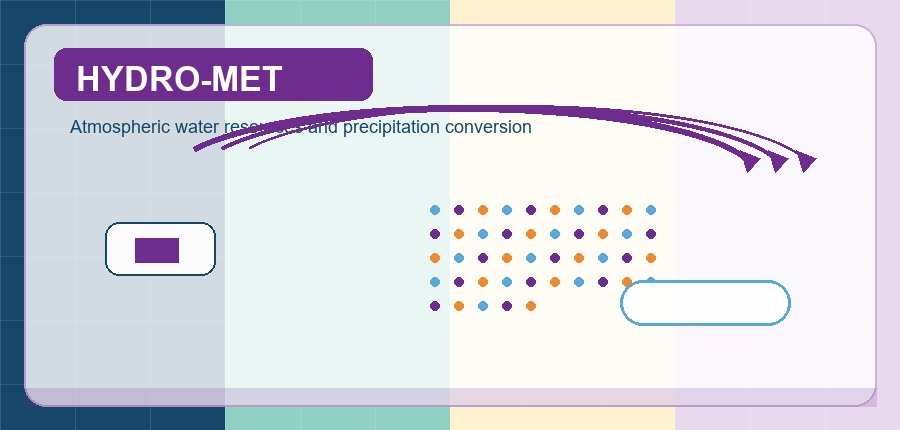

Selected Research Projects as PI / Co-PI
- Impact of water diversion of western route of South-to-North water transfer project on ecological environment of Yangtze River and Yellow River and Countermeasures (No. 2022YFC3202400), National Key Research and Development Project, Ministry of Science and Technology of China, Co-PI, CNY 54.48 million, Allocation of CNY 1.0 million, 2022.11-2026.10.
- Multi-source balanced allocation and intelligent control technology of water conveyance in eastern route of South-to-North water transfer project (No. 2022YFC3204600), National Key Research and Development Project, Ministry of Science and Technology of China, Co-PI, CNY 44.96 million, Allocation of CNY 500,000, 2022.11-2026.2.
- Research on the performance and mechanism of air curtain reinforced ice control boom under complex sea conditions in the Arctic ice region (No. 52271357), General Project of National Natural Science Funds, National Natural Science Foundation of China, Co-PI, CNY 540,000, 2023.1-2026.12.
- Assessment of water resources allocation and scheduling in Beijing (2021~2022) (No. SDZX-2022-0009), Technology Management Integration Project, Beijing Water Authority, Co-PI, CNY 1787,500 2022.3-2022.12.
- Research and development of management measures for major scientific and technological tackles (No. DXZ-2021-106-SZ-ZX), Technology Management Integration Project, China South-to-North Water Diversion Corporation Limited, Co-PI, CNY 150,000 2022.1-2023.1.
- Mathematical model experimental study on flood control safety and river regime impact for the Yangqiangyan Bridge of the S309 Hezhang County (Houhe to Kuixiang, Guizhou-Yunnan Border) Highway Reconstruction and Expansion Project (No. 20212001109), Technology Management Integration Project, PowerChina Guiyang Engineering Corporation Limited, Co-PI, CNY 296,000, 2021.6-2021.8.
- Research on mechanism and numerical model of acoustic agglomeration of aerosol particles (No. 2021T140385), Special Funding Project, China Postdoctoral Science Foundation, PI, CNY 180,000, 2021.7-2023.12.
- Research on the Potential Exploitation Technology of Precipitation Conversion Rate Based on Ultra-High Power Focused Acoustic Waves (No. YESS20200094), Young Elite Scientists Sponsorship Program, China Association for Science and Technology (CAST) , PI, CNY 450,000, 2021.1-2023.12.
- Research on agglomeration process and mechanism of aerosol particle under the action of combined acoustic waves and currents (No. 52009059), National Natural Science Funds for Young Scholars, National Natural Science Foundation of China, PI, CNY 240,000, 2021.1-2023.12.
- Study on local scour process of bed surface near vibration submarine pipeline under wave and current (No. HESS-1909), Open Fund Project, State Key Laboratory of Hydraulic Engineering Simulation and Safety, Tianjin University, PI, CNY 60,000, 2019.10-2022.10.
- Research on failure mechanism and fine numerical model of floating oil boom under complex sea conditions (No. 2018M641372), General Project, China Postdoctoral Science Fundation, PI, CNY 50,000, 2018.10-2020.10.